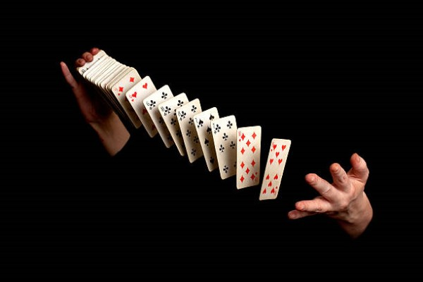
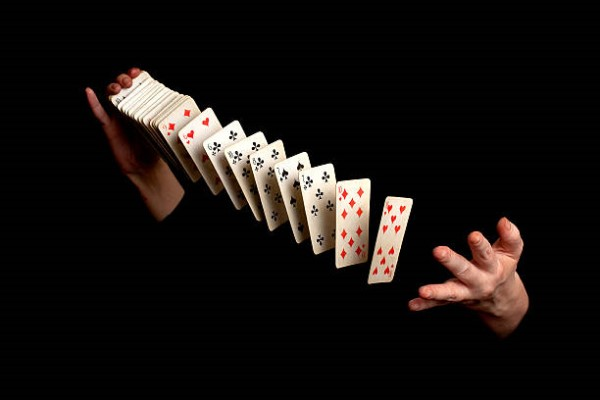

throwingCard
 

you may have played cards but have you thrown cards?
throwing cards are a real sport and it incredible to watch. There are even cards specially made for throwing and myriad of techniques have been invented to throw cards. Its easy to get into but hard to master, so do feel free to try a bit at home
be warned though this can be dangerous if done incorrectly expecially if you are aiming at a live target
Art in your hands and cards
Cardistry is a visual performance done with both your hands and cards to create patterns by flourishing cards, ever seem those people of TV form bridges out of cards? Thats cardistry, there are many different cards made for cardistry, with different patterns on the back to create different visual illusions as well as different textures to fit the users hand
Making tricks seems like miracles
probably the most well known use of cards outside of playing cards, cards have been used in magic seen hundreds of years ago, they were cheap,versatile and common enough to become a prop for magic shows. Card magic usually involves around sleight of hands where magicians move or manipulate the cards unknowingly to the audience to create an illusion where it seems like the magician can find cards whitout knowing where they are or what they are.